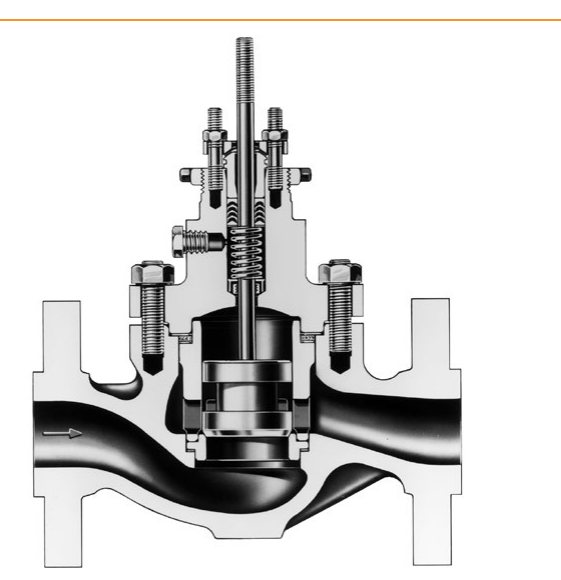

Bolted-Flange Bonnet — Bolting, Gaskets & Cage Alignment

1 2 3 4- 1Bonnet — an integral flange forged from body-equivalent material, since it is itself a pressure-containing member
- 2Bolting/gasket stack — compresses a flat sheet gasket at the body-bonnet joint, a spiral-wound gasket atop the cage, and a second flat sheet gasket below the seat ring
- 3Cage alignment — the same bolting keeps the cage, and through it the plug and stem, aligned
- 4Packing-follower retention — retained by a flange on the bonnet’s own yoke boss, not a separate part
After Control Valve Handbook, 6th ed., Fig. 3.19 (p.65) — used directly, house numbered markers added (no printed key of its own). Component Index: cvh-cmp-typical-bonnet-flange-stud-bolts.